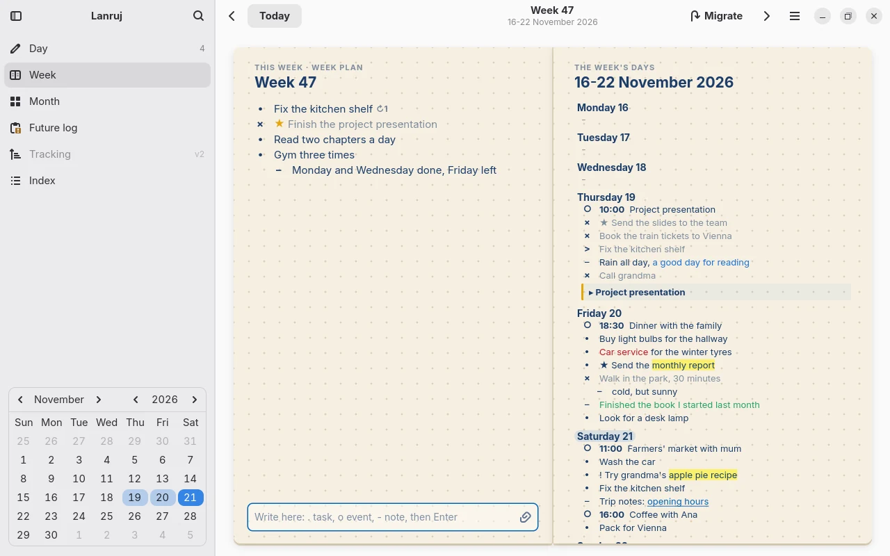

Day, week, month and future logZiua, săptămâna, luna și planurile
The week page sets your plan next to every day of the week. The month page holds a calendar and the month's tasks. The future log keeps what comes later, and on the first of the month it moves into place by itself. Pagina săptămânii pune planul tău lângă fiecare zi a săptămânii. Pagina lunii are calendarul și sarcinile lunii. Planurile țin ce vine mai târziu și, la început de lună, trec singure la locul lor.
